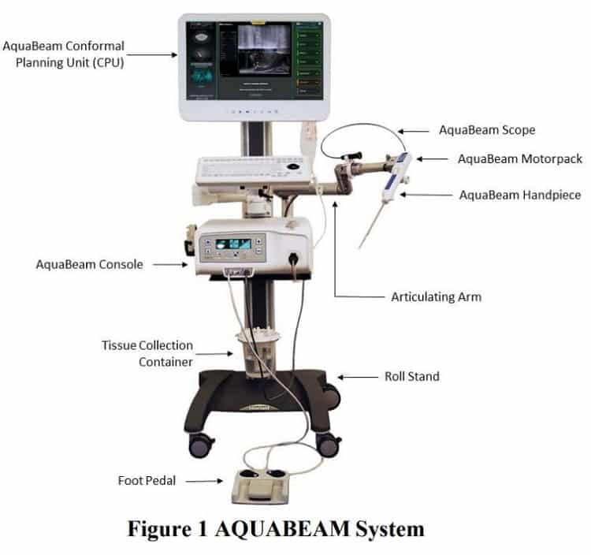
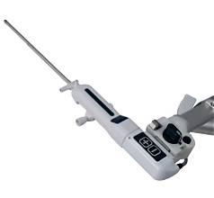

Device R&D case study — hardware, fixtures, process, V&V
PROCEPT BioRobotics — AquaBeam R&D
Two chapters with PROCEPT: consulting support on next-gen AquaBeam electromechanical fixtures and quality investigations, then full-time R&D focused on the handpiece manifold — consolidating fluid paths, cutting cost, and addressing field failures.
Consulting chapter
As a consultant I supported electromechanical fixtures for the next-generation AquaBeam system, and contributed to failure analysis (FA) and CAPAs for Quality Assurance.
- Fixture work that had to be buildable, repeatable, and useful on the bench.
- Structured FA / CAPA support alongside QA — root cause, containment, and corrective action discipline.
Full-time R&D — handpiece manifold
In a full-time R&D role I owned a redesign of the handpiece manifold: consolidating the fluid path from six paths down to one.
- >90% cost reduction on the manifold relative to the prior multi-path approach.
- Fixed field failures tied to the previous architecture.
- Participated in a production internal audit — closing the loop between design intent and manufacturing reality.
Figures above describe engineering and cost outcomes from the redesign program — not marketing claims about clinical performance.
Gallery
Public product reference images for context on the AquaBeam platform.

